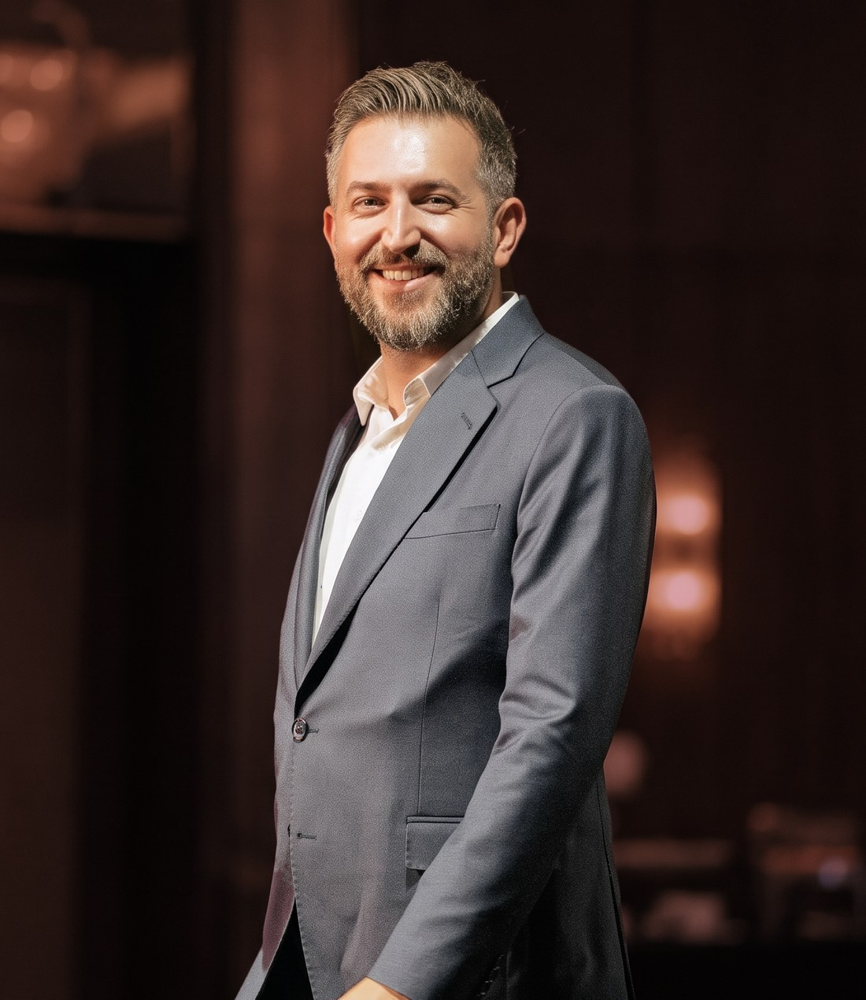
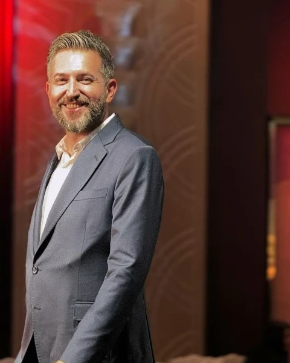
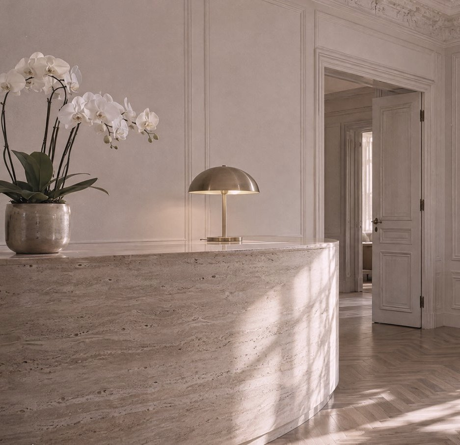

Nişantaşı, İstanbul
Sizi görmeden,
size bir şey önermem.
Muayenehaneme gelen herkese ilk söylediğim şudur: Burada bir işlem listesi yok, bir görüşme var. Önce beklentinizi dinler, sonra yüzünüzü değerlendirir, seçenekleri riskleriyle birlikte anlatırım. Karar sizindir.
Dr. Oğuzhan Akgül
Her konunun kendi sayfasında uygulama, süreç ve iyileşme bilgisi yer alır.
Görüşmeye gelmeden önce
Testler bilgilendirme içindir, tanı koymaz. Sonucunuzu yazdırıp yanınızda getirebilirsiniz.
Randevu ve hazırlık. Randevu Sihirbazı, Muayene Hazırlık Listesi, Danışma Asistanı.
Cilt. Cilt Tipi Testi, Fototip Testi, Leke Eğilimi Testi, Hassas Cilt Testi, Göz Altı Morluk Tipi.
Uygulama ve iyileşme. İyileşme Süresi Hesaplayıcı, Özel Gün Takvimi, İşlem Sonrası Bakım Asistanı, Acil Belirti Kontrolü.
Özel konular. Aşırı Terleme Testi, Saç Dökülmesi Anketi, Güneş Koruma Danışmanı, Bakım Rutini Oluşturucu.

Hakkımda
Tıp eğitimimi Çukurova Üniversitesi'nde tamamladım. Yirmi iki yıldır hekimlik yapıyorum. 2016'dan beri medikal estetik alanında çalışıyorum, 2020'den beri hastalarımı Nişantaşı'ndaki muayenehanemde kabul ediyorum. Görüşmelerde önceliğim beklentiyi doğru anlamak ve neyin mümkün olduğunu açıkça söylemek.
- 22 yıl
- Hekimlik deneyimi
- 2016
- Medikal estetik çalışmaları
- 2020
- Nişantaşı muayenehanesi
Görüşme nasıl ilerler?
Talep
Formu doldurursunuz ya da WhatsApp'tan yazarsınız. Ekibimiz sizi arayarak uygun zamanı planlar.
Görüşme
Beklentinizi dinlerim, yüzünüzü ve sağlık geçmişinizi değerlendiririm.
Plan
Seçenekleri, risklerini ve iyileşme sürecini birlikte konuşuruz. Karar sizindir.
Kontrol
Uygulama yapıldıysa bakım bilgisi ve kontrol zamanı size iletilir.
